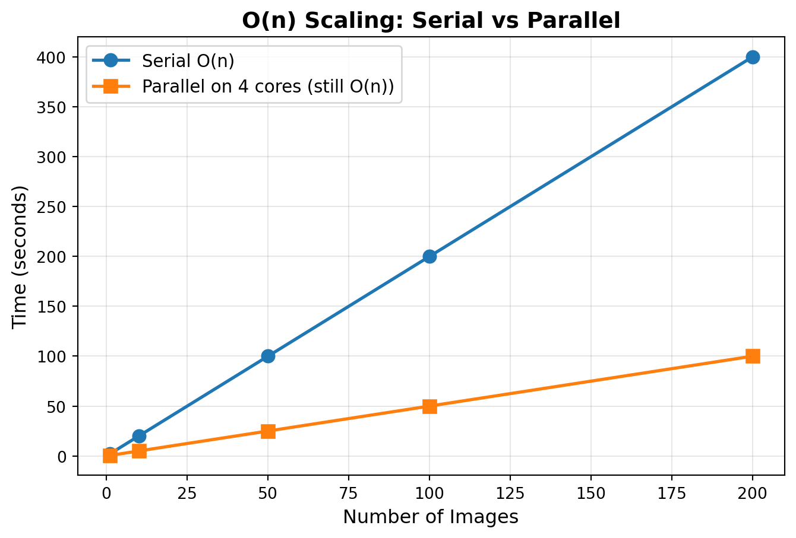
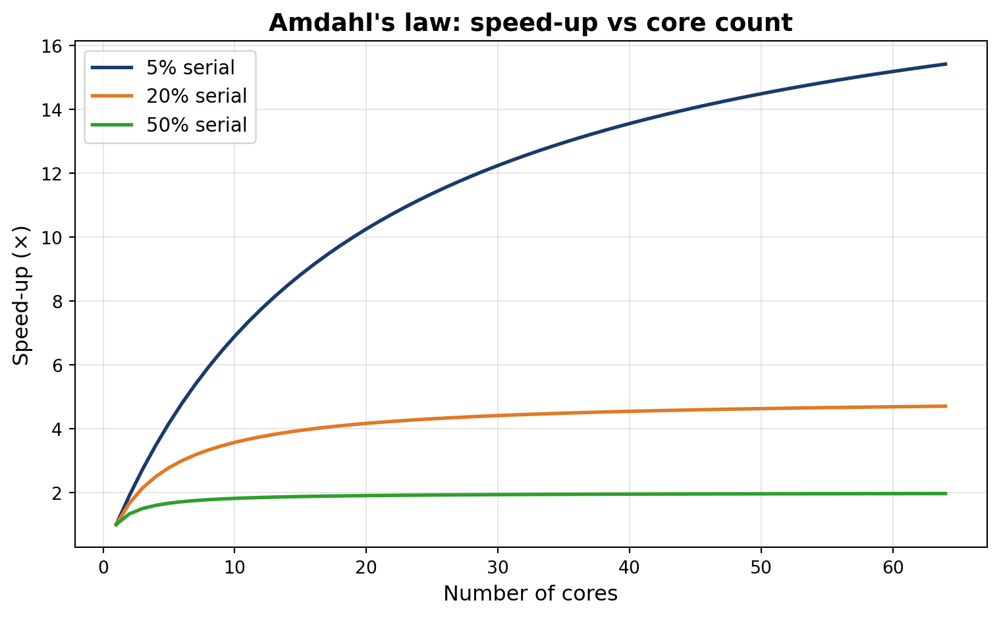

0
1
4
9
16
25DATASCI 350 - Data Science Computing
Lecture 21 - Parallel Computing Fundamentals
Hello again, my friends! 😊
Brief recap 📚
Module 06: getting data from the web
What we did in lectures 18 and 19
- A web API is a contract between your code and a server
- We built URLs, read status codes, and followed paths through JSON
curlandrequestsfetched the data- A
forloop turned the reply into a DataFrame - We saved a snapshot, so the analysis gives the same numbers every time
- Today: what happens when the data get really big?
- This module is about scaling: making code cope with more data
- Sometimes the answer is parallel code: several cores working at once
- Sometimes it is a better algorithm
- Sometimes it is a faster engine, like DuckDB (next lecture)
Lecture 19’s course panel, wdi_panel.parquet, uses the parquet format we meet later today
Today’s agenda
Lecture outline
What we will cover today
- Serial and parallel code, and the
mapfunction joblibandconcurrent.futures: parallel work on your laptop- Big O notation: what parallelism can and cannot fix
- Amdahl’s law: the limit on speed-up
- The GIL: why threads do not always help in Python
- Dask for data bigger than your memory
- Lazy arrays and DataFrames
- CSV and parquet files
dask.delayedfor your own functions
- Best practices: when to parallelise, and when not to


Serial vs parallel algorithms
Serial execution and the map function
One line finishes before the next one starts
- Python normally runs one line after another, in order
- This loop calls
baron each number, one at a time:
mapapplies one function to every element of a list- Here is my own version, so you can see the loop inside:
- Python has a built-in
map:
- Same answer, one line. Use the built-in one
Using joblib for parallel computing
Two functions turn a loop into parallel work
- Each call to
baris independent, so the calls can run at the same time - Your CPU has several cores. Each core runs one task at a time
joblibsends tasks to worker processes: separate copies of Python, one per coreParallel(n_jobs=6)runs up to six tasks at once.n_jobs=-1uses all coresdelayed(bar)wrapsbar, so joblib runs it later, on a workerdelayed(bar)(x) for x in foomakes one task per element- That is a generator expression: a
forloop inside brackets
- Using our
barfunction andfooarray from before:
- Each worker gets a different element of
foo - The results match the serial version, because the work is the same
Serial vs parallel execution
Four heavy calls, timed for real
calculationruns ten heavy steps on ten million random numbers- The calls do not depend on each other. The problem is embarrassingly parallel
%timeitruns a line several times and reports the average time. It works in Jupyter only%%timeit(two%signs) times a whole cell- One call:
- Four calls, one after another:
_is the usual name for a loop variable we do not use
- Four calls, in parallel:
- It is not a full 4× speed-up, because starting workers and collecting results takes time. The saving is still real
concurrent.futures
concurrent.futures: the standard-library option
The same pattern ships with Python itself
concurrent.futurescomes with Python: nothing to install- Slow code is either computing or waiting
- Computing (CPU-bound): use processes, with
ProcessPoolExecutor - Waiting (I/O-bound): use threads, with
ThreadPoolExecutor - A thread is a light worker that shares its process’s memory
withstarts the workers and stops them at the end
- In a notebook on macOS or Windows, import
barfrom a.pyfile. Workers cannot see functions defined in a cell. joblib avoids this
- Threads start fast, and waiting needs no extra core
- Each URL asks the World Bank API for one country’s population
from concurrent.futures import ThreadPoolExecutor
import requests
base = "https://api.worldbank.org/v2/country/"
end = "/indicator/SP.POP.TOTL?format=json&per_page=100"
urls = [base + "BRA" + end,
base + "IND" + end,
base + "USA" + end]
def fetch(url):
return requests.get(url, timeout=30).json()
with ThreadPoolExecutor(max_workers=3) as executor:
results = list(executor.map(fetch, urls))- Lecture 19 sent one request at a time. Here, all three wait at once
When to use which?
joblib inside scikit-learn, and a summary
- joblib suits numeric loops and scikit-learn
- scikit-learn uses joblib when you set
n_jobs=-1 load_digits()loads 1,797 small images of handwritten digits
from sklearn.datasets import load_digits
from sklearn.model_selection import GridSearchCV
from sklearn.svm import SVC
import time
digits = load_digits()
param_grid = {"C": [0.1, 1, 10], "gamma": [0.001, 0.01]}
start = time.time()
search = GridSearchCV(SVC(), param_grid, cv=3, n_jobs=-1)
search.fit(digits.data, digits.target)
elapsed = time.time() - start
print(f"Best score: {search.best_score_:.3f}")
print(f"Time: {elapsed:.2f}s (all cores)")Best score: 0.976
Time: 1.93s (all cores)concurrent.futuressuits downloads, and machines where you cannot install packages
| Scenario | Tool |
|---|---|
| sklearn / numeric loops | joblib (n_jobs=-1) |
| Download many files | ThreadPoolExecutor |
| CPU-heavy, no dependencies | ProcessPoolExecutor |
| Bigger than RAM, clusters | Dask (next section) |
Every tool follows the same steps: split the work, run it on separate workers, then collect the results
Big O notation
Big O notation
Runtime growth decides whether parallelism helps
- Big O notation describes how the runtime grows as the input grows
- O(1) means constant: reading one array element costs the same whatever the array size
- O(n) means linear: a single loop takes twice as long when the input doubles
- O(n²) means quadratic: a nested loop takes four times as long when the input doubles
- Calling
calculationonninputs is O(n): a hundred calls take a hundred times as long as one
Code
import matplotlib.pyplot as plt
import numpy as np
# Simulate processing times
num_images = np.array([1, 10, 50, 100, 200])
sequential_time = num_images * 2 # 2 seconds per image
parallel_time = (num_images * 2) / 4 # 4 cores, ideal speedup
plt.figure(figsize=(8, 5))
plt.plot(num_images, sequential_time, 'o-', label='Serial O(n)', linewidth=2, markersize=8)
plt.plot(num_images, parallel_time, 's-', label='Parallel on 4 cores (still O(n))', linewidth=2, markersize=8)
plt.xlabel('Number of Images', fontsize=12)
plt.ylabel('Time (seconds)', fontsize=12)
plt.title('O(n) Scaling: Serial vs Parallel', fontsize=14, fontweight='bold')
plt.legend(fontsize=11)
plt.grid(True, alpha=0.3)
plt.show()
What parallelism does to complexity
Cores divide the time, but the growth rate stays the same
- With
pcores, an O(n) task takes about n/p time plus overhead. It is still O(n) - Four cores make it almost 4× faster, minus the cost of running the workers
- The best candidates are embarrassingly parallel O(n) tasks, such as one function applied to
nseparate inputs - These tasks share no data and do not wait for each other
Parallelism never changes the Big O class. It only divides the time by a constant, so O(n²) on eight cores is still O(n²)
- A poor candidate for parallelism:
- 1,000 elements give 1 million operations
n = 100_000gives 10 billion. Eight cores still leave 1.25 billion each- Other poor candidates:
- Steps that need results from a previous step
- Tasks that share the same data
- Tasks limited by memory, not by the CPU
Try it yourself! 🧠
- Install the packages with
pip install joblib numpyif you have not done so already - Run the serial version below and write down the time it prints.
np.arange(1000000)makes an array of the numbers 0 to 999,999
- Now run the parallel version and write down its time as well. Be patient, as this one takes a while
- Compare the two times and decide which version you would use
Amdahl’s law
Amdahl’s law: the speed-up ceiling
The serial share caps the speed-up
- Some parts of a program cannot run in parallel: setup, merging results, or steps that wait for the one before
- That part is the serial share \(s\). The rest, \(p = 1 - s\), can be split across cores
- More cores only speed up \(p\), so \(s\) sets a ceiling (Amdahl’s law)
- \(\text{speedup} = \dfrac{1}{s + \dfrac{p}{N}}\), with \(N\) = number of cores
- Example: 90% parallel (\(s = 0.1\)) on 8 cores gives \(\frac{1}{0.1 + 0.9/8} = \frac{1}{0.2125} \approx 4.7\times\), not \(8\times\)
- Even with infinite cores, the serial 10% remains, so the limit is \(1/0.1 = 10\times\)
Code
import matplotlib.pyplot as plt
import numpy as np
cores = np.arange(1, 65)
serial_fracs = [0.05, 0.2, 0.5]
labels = ["5% serial", "20% serial", "50% serial"]
colours = ["#1B3A6B", "#E07A24", "#2CA02C"]
plt.figure(figsize=(8, 5))
for s, lab, c in zip(serial_fracs, labels, colours):
speedup = 1 / (s + (1 - s) / cores)
plt.plot(cores, speedup, label=lab, linewidth=2, color=c)
plt.xlabel("Number of cores", fontsize=12)
plt.ylabel("Speed-up (×)", fontsize=12)
plt.title("Amdahl's law: speed-up vs core count",
fontsize=14, fontweight="bold")
plt.legend(fontsize=11)
plt.grid(True, alpha=0.3)
plt.tight_layout()
plt.show()
Global Interpreter Lock (GIL)
The GIL
Why threads do not always help in Python
- CPython, the usual Python, has a Global Interpreter Lock (GIL)
- Only one thread runs Python code at a time
- Threads help code that waits: the lock is released during downloads
- Threads do not help code that computes
- For computing, use processes, each with its own GIL
- NumPy releases the GIL in its C code, so threads can help there
- Polars and DuckDB use all cores on their own
- Python 3.14 offers a free-threaded build without the GIL (PEP 779), but not by default
- Which tool for which task:
| Task | Use | Why |
|---|---|---|
| Number crunching | Processes (joblib, ProcessPoolExecutor) |
Each has its own GIL |
| Downloading many URLs | Threads (ThreadPoolExecutor) |
GIL released while waiting |
| NumPy | Threads can help | GIL released in C code |
| Polars / DuckDB | Neither | Already use all cores |
sklearn with n_jobs=-1 |
Processes (via joblib) |
Each fold trains independently |
Dask
Dask
Familiar pandas code on data bigger than your RAM
- Dask is a Python library for parallel computing
- It handles data bigger than your RAM, and runs on clusters of many machines
- You write NumPy or pandas code, and Dask runs it in parallel
- Its task scheduler splits the work into small tasks and spreads them over your cores
- It offers arrays, DataFrames and bags (parallel lists)
- It is actively developed (2026.8.0, August 2026)
- Next lecture times the same group-by in DuckDB, pandas and Dask

joblib splits the work into function calls. Dask also splits the data into chunks, so the data can be bigger than your RAM
Dask arrays
NumPy arrays split into chunks, and nothing runs until .compute()
- A Dask array splits a large array into chunks
- Each chunk is a NumPy array, processed in parallel
- Here each chunk is 100 by 100:
- Dask arrays are lazy: Dask plans the steps but does not run them yet
- Planning first helps Dask save memory
- Slicing gives a plan, not numbers:
.compute()runs the plan:
Dask arrays
Most NumPy operations work, and big ones can run faster
- Maths (
+,*,exp,log) and summaries (sum(),mean(),std()) work as in NumPy
- The same operation on 100 million numbers, first in NumPy:
- Then in Dask, with automatic chunks:
Not a rule: here NumPy uses one core and Dask uses several. On small data, Dask is often slower
Dask dataframes
Many pandas DataFrames behind one lazy interface
- A Dask DataFrame is many small pandas DataFrames, split by row
dask.datasets.timeseries()makes random example data: one row per second from 1 to 30 January 2000
- It uses about 120 MB in memory
- Dask DataFrames are lazy, like Dask arrays
- The table shows
..., because no rows have been computed yet
- Dask already knows the column names and dtypes, the type of each column
Dask dataframes
Filtering and grouping look exactly like pandas
- Dask DataFrames support most of the pandas API
head()is not lazy: it computes the first rows straight away
| name | id | x | y | |
|---|---|---|---|---|
| timestamp | ||||
| 2000-01-01 00:00:00 | Yvonne | 999 | -0.64 | 0.35 |
| 2000-01-01 00:00:01 | Charlie | 1015 | -0.67 | -0.09 |
| 2000-01-01 00:00:02 | Charlie | 912 | 0.22 | 0.03 |
| 2000-01-01 00:00:03 | Quinn | 988 | -0.85 | -0.53 |
| 2000-01-01 00:00:04 | Xavier | 968 | 0.20 | 0.48 |
- Keep the rows where
y > 0, then take the standard deviation ofxfor eachname
Dask Series Structure:
npartitions=1
float64
...
Dask Name: getitem, 8 expressions
Expr=(((Filter(frame=ArrowStringConversion(frame=Timeseries(815c770)), predicate=ArrowStringConversion(frame=Timeseries(815c770))['y'] > 0))[['name', 'x']]).std(ddof=1, numeric_only=False, split_out=None, observed=True))['x']df3still shows no numbers.compute()runs the plan and returns a pandas Series
Dask dataframes
.persist() keeps a computed result in memory
- Aggregations work the same way
- The sum of
xand the maximum ofy, for eachname:
Combining Dask and Pandas
The workflow ends with a small pandas DataFrame
- Dask does the heavy work on data too big for memory
.compute()returns an ordinary pandas DataFrame for the last steps- Dask code reads like pandas, so switching is easy
Load and filter in Dask, aggregate down to something small, call .compute(), then finish in pandas
import dask
import dask.dataframe as dd
df = dask.datasets.timeseries()
# Step 1: filter with Dask
positive = df[df.x > 0]
# Step 2: aggregate with Dask
summary = positive.groupby("name").agg({"x": "mean", "y": "std"})
# Step 3: bring the small result to pandas
pdf = summary.compute()
# Step 4: use pandas normally
pdf.sort_values("x", ascending=False).head(5)| x | y | |
|---|---|---|
| name | ||
| Bob | 0.5 | 0.58 |
| Zelda | 0.5 | 0.58 |
| Norbert | 0.5 | 0.58 |
| Oliver | 0.5 | 0.58 |
| Jerry | 0.5 | 0.58 |
Try it yourself! 🧠
- Install Dask with
pip install daskif you have not already - Import
numpyanddask.array - Set
size = 10_000_000. Use a smaller number if your laptop is short on memory - Build a Dask array of that many random numbers with
chunks=100_000 - Time
da.sqrt(x**2).mean().compute()with%timeit - Repeat steps 4 and 5 with
chunks=2_000_000 - Repeat them once more with
chunks=5_000_000 - Write down the three timings before you look at the appendix
import numpy as np
import dask.array as da
size = 10_000_000
# Dask with SMALL chunks
da_data_small = da.random.random(size, chunks=100_000) # 100 chunks
%timeit da.sqrt(da_data_small**2).mean().compute()
# Dask with MEDIUM chunks
da_data_medium = da.random.random(size, chunks=2_000_000) # 5 chunks
%timeit da.sqrt(da_data_medium**2).mean().compute()
# Dask with LARGE chunks
da_data_large = da.random.random(size, chunks=5_000_000) # 2 chunks
%timeit da.sqrt(da_data_large**2).mean().compute()Read and write data with Dask
Reading and writing data
Thirty daily CSV files from one line of Dask
- CSV is still the most common data format
- pandas loads the whole file into memory first
- A big file can fill your RAM, even if you need one column
- Dask reads and writes CSV in partitions: pieces of the table
- Here, one partition per day. Dask replaces the
*in'data/*.csv'with each name name(i)turns partitioniinto a date- Result: 30 files, 1 to 30 January 2000
- The
;hides the file list thatto_csvreturns
Reading and writing data
One glob pattern reads a whole month
- The
datafolder now has 30 CSV files, 182 MB in total dd.read_csvaccepts a glob pattern:2000-*-*.csvmatches them all- Dask reads them as one DataFrame
- It reads a few at a time, in parallel, so memory use stays low
Reading and writing data
The same query runs faster on a columnar file
- Parquet has replaced CSV for most analysis
- It stores data by column, so a query can skip the columns it does not need
- It compresses too: 182 MB of CSV becomes 86 MB of parquet (53% smaller)
- We can read back only the columns we need:
- The same group-by, on parquet:
Why Parquet?
Column storage reads only what you ask for
- CSV is row-based, so reading one column still means scanning every row
- Parquet is column-based, so it reads the columns you name and skips the others
| Feature | CSV | Parquet |
|---|---|---|
| Storage | Row-based | Column-based |
| Compression | None | Snappy/gzip |
| Column selection | Reads all | Reads only needed |
| Data types | Text only | Typed (int, float, date) |
| Our January 2000 data | 182 MB | 86 MB |
- pandas reads both formats too:
CSV is not obsolete. Use parquet for files over 100 MB, or with many columns when you need only a few. Keep CSV for small files and anything a colleague will open in Excel
Dask delayed
Dask delayed
A decorator schedules any function you already have
dask.delayedparallelises functions you already have- No Dask DataFrame or array needed
- First, four calls in a row:
- A decorator is an
@line above adef. It changes what the function does - With
@dask.delayed, calling the function creates a task instead of running it
@dask.delayed
def delayed_calculation(size=10000000):
arr = np.random.rand(size)
for _ in range(10):
arr = np.sqrt(arr) + np.sin(arr)
return np.mean(arr)
results = []
for _ in range(4):
results.append(delayed_calculation())
# Compute all results at once
%timeit final_results = dask.compute(*results)515 ms ± 12.1 ms per loop (mean ± std. dev. of 7 runs, 1 loop each)dask.compute(*results)runs all four tasks. The*passes the list items one by one
Dask delayed
Dask draws the plan before running a single task
- Three functions on three input sizes: nine tasks in three branches
@dask.delayed
def generate_data(size):
return np.random.rand(size)
@dask.delayed
def transform_data(data):
return np.sqrt(data) + np.sin(data)
@dask.delayed
def aggregate_data(data):
return {
'mean': np.mean(data),
'std': np.std(data),
'max': np.max(data)
}
sizes = [1000000, 2000000, 3000000]
# Build the tasks (nothing runs yet)
dask_results = []
for size in sizes:
data = generate_data(size)
transformed = transform_data(data)
stats = aggregate_data(transformed)
dask_results.append(stats)
%timeit dask.compute(*dask_results)26.8 ms ± 495 μs per loop (mean ± std. dev. of 7 runs, 10 loops each)dask.visualize()draws the plan without running it

Dask sees all nine tasks first. The branches are independent, so they can run on separate workers
The Dask dashboard
Watching the task stream at localhost:8787
from dask.distributed import Client, thenclient = Client(), opens a dashboard atlocalhost:8787- Install it first:
pip install "dask[distributed]" bokeh - The picture shows our three-step pipeline, run in a loop
- Each row is one worker, and each coloured bar is one task
- Purple is
generate_data, teal istransform_data, and green isaggregate_data - Bars stacked on top of each other ran at the same time
- It is the quickest way to check that your work really runs in parallel

Dashboard at localhost:8787, running on my laptop
White space means an idle worker. Big gaps usually mean the chunks are too big, so there are fewer tasks than workers
Best practices
Best practices
Cheaper fixes to try before you parallelise
- Measure first:
%timeitandcProfilefind the slow part. Amdahl’s law says what fixing it is worth - Check the tasks: are they independent, and big enough to be worth a worker?
- Better algorithm: \(O(n \log n)\) beats parallel \(O(n^2)\) on large inputs
- Better engine: DuckDB may beat parallel pandas (next lecture)
- Built-ins first: NumPy or pandas may already have a fast function
- Sample first: do you need all the data?
- Use parquet: our parquet group-by was about 10× faster than CSV
- Call
.compute()and.persist()rarely: each call runs the whole plan - Try a few chunk sizes, or start with
chunks='auto' - More tips in the Dask best practices
Most common mistake: parallelising before measuring. More cores will not fix a slow disk or an \(O(n^2)\) loop
Summary
What we learned today
- Serial and parallel code:
map, embarrassingly parallel problems,joblib concurrent.futures: processes for CPU work, threads for waiting- Big O notation: parallelism divides the time, but the growth rate stays the same
- Amdahl’s law: the serial share caps the speed-up
- The GIL: threads for waiting, processes for computing
- Dask: lazy arrays and DataFrames for data bigger than RAM
dask.delayedparallelises your own functions, anddask.visualizeshows the plan- Parquet: our January 2000 data went from 182 MB to 86 MB, with a much faster group-by
- Next lecture, SQL Revision with DuckDB: SQL on the WDI panel, and the same group-by in DuckDB, pandas and Dask
| Engine | Language | Parallel? | Out-of-core? |
|---|---|---|---|
| pandas | Python/C | Single-threaded | No |
| Polars | Rust | All cores | Yes (streaming) |
| DuckDB | C++ | All cores | Yes |
| Dask | Python | All cores + clusters | Yes |
- Polars is covered in tutorial 07
- SQL on DataFrames before then:
tutorials/04-duckdb-sql-tutorial.qmd
Thank you! 😊
Appendix 01
Solution to the joblib exercise
46.8 ms ± 2.44 ms per loop (mean ± std. dev. of 7 runs, 10 loops each)1.9 s ± 16.8 ms per loop (mean ± std. dev. of 7 runs, 1 loop each)- Expected result: the parallel version is slower here
square(x)finishes so fast that the cost of sending a million tiny tasks to the workers swamps the work- Parallel computing pays off when each task is heavy
Appendix 02
Chunk sizes compared
- Ten million random numbers, computing
mean(sqrt(x^2))at four chunk sizes - Medium chunks (2 million) win on my laptop
44.1 ms ± 498 μs per loop (mean ± std. dev. of 7 runs, 10 loops each)13.8 ms ± 89.2 μs per loop (mean ± std. dev. of 7 runs, 100 loops each)20.2 ms ± 235 μs per loop (mean ± std. dev. of 7 runs, 10 loops each)33.2 ms ± 222 μs per loop (mean ± std. dev. of 7 runs, 10 loops each)